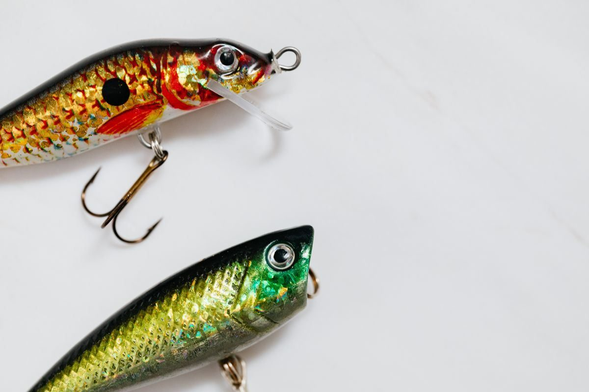
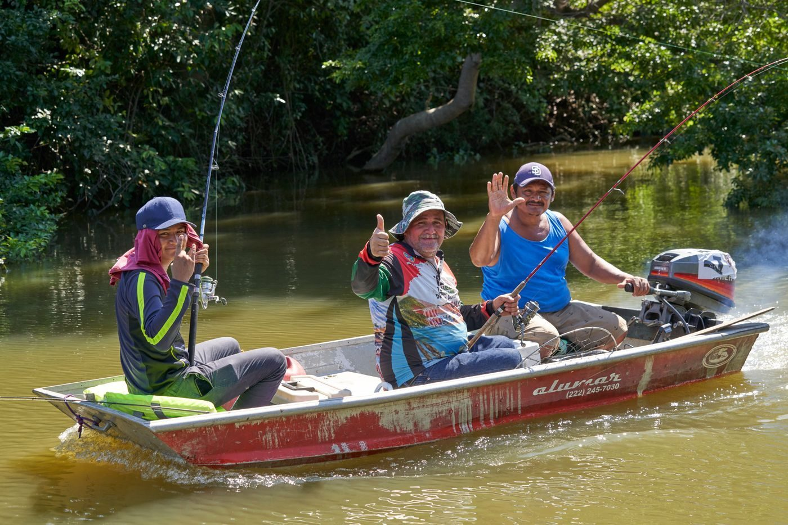

Portland, Maine
Fishing charters, whale watches, sunset cruises, and island tours from Portland, Maine, with Captain Cory Hoffman. Trips run May 1 through December 24 and are booked by phone.

Off the Hook Charters runs fishing charters, whale watches, sunset cruises, and island tours from 400 Commercial St in Portland, Maine, with Captain Cory Hoffman. Its FishingBooker trips include a 5-hour offshore trip and a 10-hour bottom fishing trip, running May 1 through December 24. Rods, reels, tackle, live bait, a fishing license, and an ice box are included. Call to book.

400 Commercial St, Portland, ME
Daily 5:00 AM to 10:00 PM; trips are by booking